The screenshot gallery now covers 30 screens in 7 setups, 203 images, including yours: dark, Dutch, 125 %, animations off. Gemini looked at all 203 first. I then looked at your 30 myself, 8 phone screens, and the places where Gemini saw something in another setup. Each finding below has its screenshot, my proposal and your choice.
The editor itself holds up well in your setup. Glyphs, pills, due flags, tree lines and the status bar are crisp at 125 % in Dutch, and nothing in the note text overlaps or shifts. The problems are in the panels and dialogs built around it. The newer side panels (person view, week review) and the phone sheets were never designed for narrow or sparse content. A few strings were never translated or were translated word for word. Two are plain bugs: a shortcut label and a text field that ignores the dark theme.
Batches A and C are small and safe; B needs a little design work per item. My proposal is A and C as one PR, then B as a second, then a beta.
Your choices and notes are kept in this browser. When you're done, use "Copy decisions" and paste the result into the chat.
Things that are wrong in any reading. All recommended.
Command palette and Shortcuts dialog, every language and theme
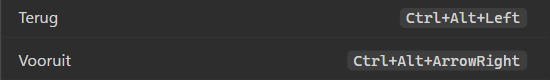
Back shows Ctrl+Alt+Left, Forward shows Ctrl+Alt+ArrowRight. The label table in shortcuts.ts has an entry for the left arrow but not the right one.
Ctrl+Alt+Right, and a test that every key name in the registry has a readable label.
Settings, Notes & sync: dark, dark-150, yours, phone
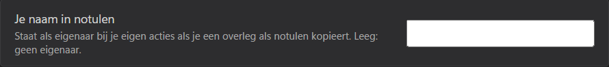
The field has the browser's default white background, the only white box on a dark page.
Style it like the other inputs in Settings (dark fill, thin border, accent on focus).
Earlier versions (Dutch, German), Shortcuts dialog (Dutch, German), week review day headers (German)
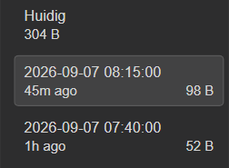
"45m ago", "1h ago", "Ctrl+W / middle-click" and German "6 open" appear in English.
Translate them in all 7 languages ("45 min geleden", "middelste muisknop"), and add these strings to the dictionary test so a hard-coded English word fails it.
Search: light and light-125 (unreadable); in dark it's weak but readable
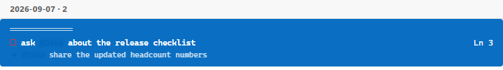
On the blue selection, the @Dana pill and the => arrow are blue on blue. The row reads "ask about the release checklist".
Inside a selected row, pills and glyphs switch to the selection's text colour (white), with the pill keeping a faint outline. Same rule in the palette and Actions, which use the same selection.
Person view: every setup; worst on the phone
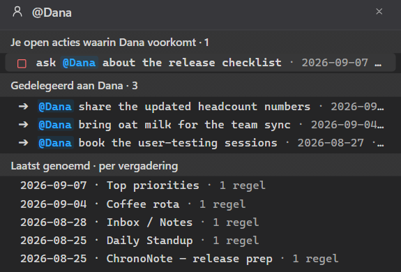
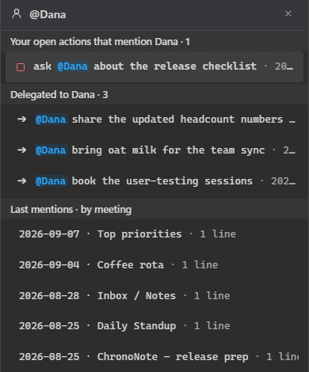
Each row is one line: action text, then date and section. When it doesn't fit, the date is cut mid-number, and the "Last mentions" rows are cut without an ellipsis.
The text gets the ellipsis, the date stays whole in its own right-aligned column. On the phone, date and section go on a second, muted line under the text.
Rename everywhere, phone
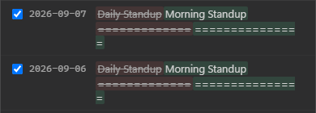
The old and new underline sit side by side; the new one wraps and leaves one = on a line of its own in every row.
Leave the underline out of the preview (it always follows the title, so it says nothing) and say "title + underline" once above the list.
Changed-on-disk dialog, every language
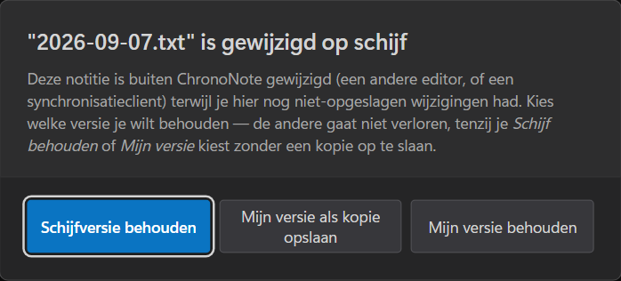
The text says "unless you choose Keep disk or Keep mine", the buttons say "Keep disk version" and "Keep my version". The middle button wraps to two lines.
The text quotes the exact button names. Shorter middle button: "Save mine as a copy" ("Mijn versie als kopie").
Nothing is broken here, but space is wasted or crowded. These need a small design choice each.
Search results, every setup
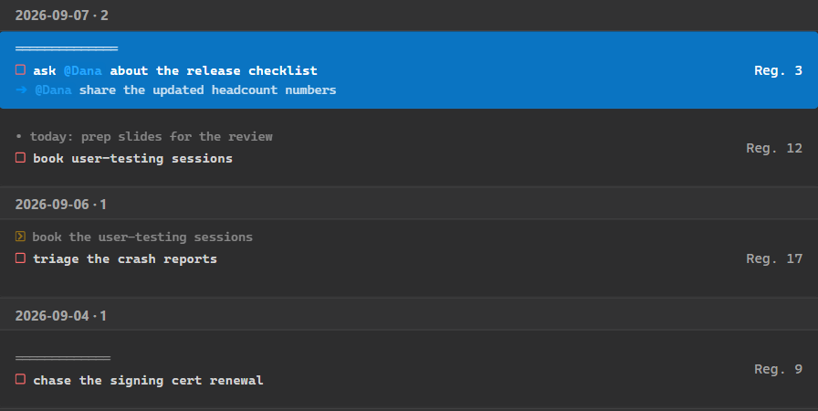
When the hit is right under a section title, the line above it (the context) is the ===== underline: a meaningless double rule.
Skip underline lines when picking context; show the section title instead ("Top priorities").
Search with saved searches, every setup
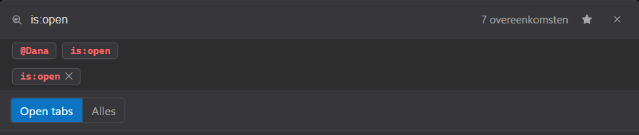
Two rows of chips: the saved searches (@Dana, is:open) and, below, the active one again with a ×. It takes 70 px and reads as a duplicate.
One row: the saved chip that matches the query is highlighted, and its × removes it from the saved list. The query itself stays in the search box.
Phone: calendar review, also rename, settings
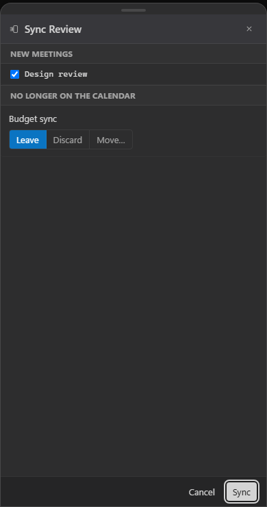
A bottom sheet is always nearly full height, so a three-row review has 450 px of empty space between its content and its buttons.
Sheets size to their content up to the current maximum, with the buttons right under it.
Week review, phone
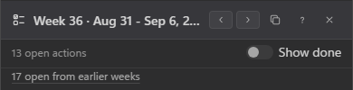
"Week 36 · Aug 31 - Sep 6, 2…" next to four buttons.
On narrow screens: "Wk 36 · 31 Aug – 6 Sep" (no year in the current year), and the Copy and Help buttons move into the sheet's footer.
Section history, every setup
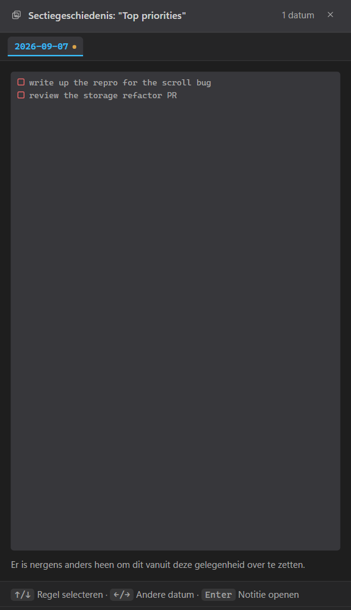
When a section has only today, the panel shows a full-height preview of two lines and "There's nowhere else to carry this over to from this occurrence" (Dutch: "Er is nergens anders heen om dit vanuit deze gelegenheid over te zetten").
The preview sizes to its content, and the message reads "This is the only time this section appears." / "Deze sectie komt alleen hier voor."
Earlier versions, desktop
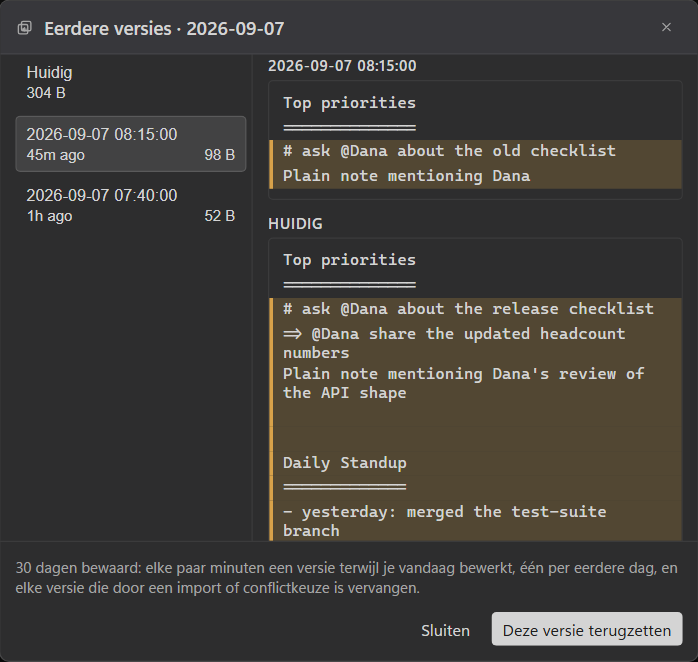
A 700 px dialog on a 1536 px window; note lines wrap in the preview. The whole current version has the yellow "changed" bar, so you can't see what changed.
Up to 1100 px wide, and only the lines that differ are highlighted (old and new side by side when there's room).
Editor, phone, with text width "Full"
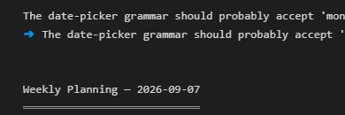
The phone uses the same text-width setting as the desktop. With "Full", a long line needs sideways scrolling.
On the phone, "Wrap" is the default (the setting can still be changed). Your call: you may prefer one setting everywhere.
Closing a tab with open actions, every language
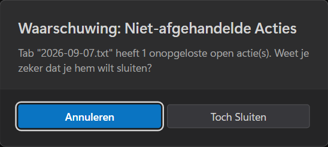
"Unresolved Actions Warning", "Close Anyway"; Dutch "Waarschuwing: Niet-afgehandelde Acties", "Toch Sluiten", "1 onopgeloste open actie(s)". Every other dialog uses sentence case.
"Close with open actions?" / "Sluiten met open acties?", text "2026-09-07 has 1 open action." with a real plural, buttons "Cancel" / "Close anyway" ("Toch sluiten").
Settings, About
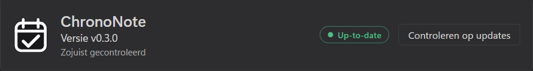
"Version v0.3.0": the word and the v say the same thing.
"Versie 0.39.0" (the v only on GitHub and in file names).
Actions pane, docked and drawer
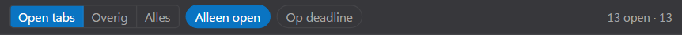
"13 open · 13" (narrow: "13 · 13"). The second number is how many rows are listed, which with "Only open" on is always the same.
One number when they're equal ("13 open"); "13 open · 20 listed" when they differ.
Search, before you type
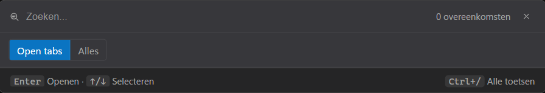
An empty box already reports "0 overeenkomsten".
No count until there's a query; the empty state shows the saved searches and a one-line hint (@name, is:open, due:).
Small things I noticed. Optional.
Editor, an => @name line right under an action at the same indent
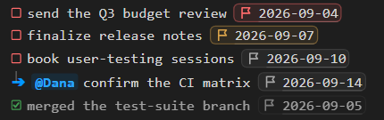
The group's tree line runs from under the action's box to the arrow line. At the same indent it is only a few pixels long, so it looks like a stray mark above the arrow.
No tree line when every child is an arrow line at the parent's indent; the line stays for indented children, where it reads well.
Settings, desktop
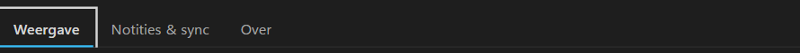
Opening Settings with the keyboard draws the focus rectangle around "Weergave", on top of its blue underline.
Focus starts on the tab but shows as the underline plus a brighter label, not a box; the box stays for Tab-key moves.
Status bar, after Copy as minutes and other confirmations
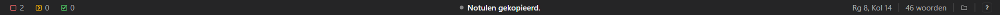
While "Notulen gekopieerd." shows, the counts shrink to bare numbers and the folder name disappears, then come back.
Keep the counts as they are; the message takes the free space in the middle, and only shrinks the counts when the window is too narrow for both.